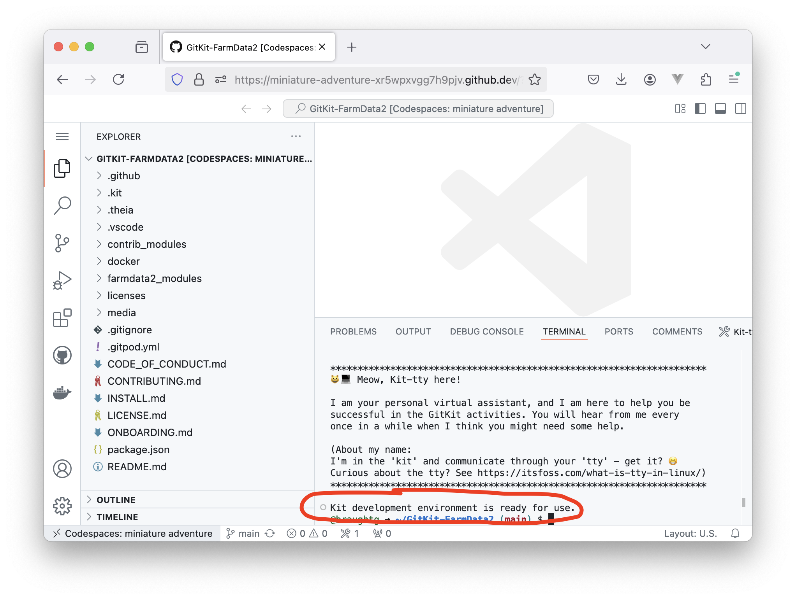

Before you will be able to pull changes from the upstream your local repository will need to know where to find the upstream repository. In earlier figures (e.g. Figure 4.1.1), there were dotted orange lines indicating that your local repository knew about your origin and that your origin knew about the upstream. However, there was no orange dotted line from your local repository to the upstream. That is because, by default, your local repository does not know the location of the upstream repository.
In Figure 4.2.1 a dotted orange line was added pointing from your local repository to the upstream. Git needs to have this information so that it can pull changes from the upstream into your local repository. In this section, you will see that the upstream remote provides this information.
Subsection4.3.1Restarting the Development Environment
Like prior chapters, you will be working within your development environment for this activity.
. Please be patient as this can take a few minutes. When the development environment is ready you will see the message "Kit development environment is ready for use." and your browser window will look similar to the following:

Subsection4.3.2Understanding Remotes
A remote is a repository that is stored on GitHub, or another repository hosting sited.
A Git remote is the URL of a remote and an associated name (e.g. origin, upstream). Git uses Git remotes to locate remote repositories. Though it can be confusing, the remote is also commonly used as a synonym for Git remote.
Exercises
1.
The git remote -v command lists the name and URL for all of the Git remotes associated with your local repository.
Be sure that you are in the directory containing your local repository and run the git remote -v command.
2.
Examine the output of the git remote -v command. You should see two lines labeled origin (fetch and push), and two lines labeled upstream (also fetch and push).
(a)
Where does the URL associated with the origin remote point?
It points to the GitKit FarmData2 repository that your instructor created for the course.
The repository that your instructor create is serving as the upstream repository.
It points to your copy of the GitKit FarmData2 repository that you forked from the upstream.
Correct! The origin is your fork that is contained in your GitHub space.
It points to the repository for the live FarmData2 project.
That repository would be the upstream if you were working on the live project.
Hint.
Look at the part of the origin remote’s URL that comes after `github.com`. This part indicates where on GitHub the repository is located.
(b)
Where does the URL associated with the upstream remote point?
It points to the GitKit FarmData2 repository that your instructor created for the course.
The repository that your instructor create is serving as the upstream repository.
It points to your copy of the GitKit FarmData2 repository that you forked from the upstream.
Correct! The origin is your fork that is contained in your GitHub space.
It points to the repository for the live FarmData2 project.
That repository would be the upstream if you were working on the live project.
Hint.
Look at the part of the origin remote’s URL that comes after `github.com`. This part indicates where on GitHub the repository is located.
3.
The remotes you just examined with git remote -v are also represented in Figure 4.2.1.
(a)
How is the origin Git remote associated with your local repository represented in the figure?
The dotted orange arrow on the left that points from your local repository to the origin.
Correct.
The dotted orange arrow on the right that points from your local repository to the upstream.
The arrow on the right represents a Git remote associated with your local repository, but it is not the origin.
The dotted orange arrow at the top that points from your origin repository to the upstream.
The arrow at the top represents a Git remote associated with your origin repository, not your local repository.
The blue cylinder at the top left of the figure.
The blue cylinders represent remote repositories. This question is asking about the Git remote.
The blue cylinder at the top right of the figure.
The blue cylinders represent remote repositories. This question is asking about the Git remote.
Hint.
Look at the diagram again. The origin Git remote will be associated with your local repo and will indicate where the origin repository is located.
(b)
How is the upstream Git remote represented associated with your local repo represented in the figure?
The dotted orange arrow on the right that points from your local repository to the upstream.
Correct.
The dotted orange arrow on the left that points from your local repository to the origin.
The arrow on the left represents a git remote associated with your local repository, but it is not the upstream.
The dotted orange arrow at the top that points from your origin repository to the upstream.
The arrow at the top represents a Git remote associated with your origin repository, not your local repository.
The blue cylinder at the top left of the figure.
The blue cylinders represent remote repositories. This question is asking about the Git remote.
The blue cylinder at the top right of the figure.
The blue cylinders represent remote repositories. This question is asking about the Git remote.
Hint.
Look at the diagram again. The upstream Git remote will be associated with your local repo and will indicate where the upstream repository is located.
Subsection4.3.3Adding an Upstream Remote
As you saw in Subsection 4.3.2 your local repository contains an upstream remote that points to the upstream being used for your course. This upstream was set automatically by the development environment when you opened your local repository.
Not all development environments are able to automatically set the upstream remote when you open your local repository. The exercises in this section will walk you through how you can manually set the upstream remote if you need to.
Exercises
1.
The git remote command you used to display the Git remotes is also used to add new Git remotes.
The format for this command is: git remote add <name> <URL>
Give a command that will create a new Git remote named upstream that points to the GitKit FarmData2 upstream repository that you are using for this course.
Hint.
The URL of the upstream for your class was given by your instructor and should be in Exercise 2.6.1.
Note that if you are using a development environment that does not automatically set the upstream remote for you, you will still only need to set it once. Once the upstream remote is set for a repository you will be able to pull from the upstream repo as often as is necessary.
It is also worth mention that there is nothing particularly special about the names of the remotes. The names origin and upstream are used by convention by most developers. However, you could name your remotes anything you like and they would still work.